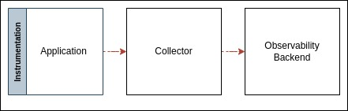
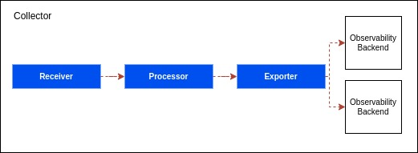
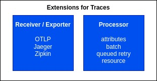
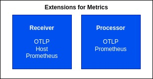
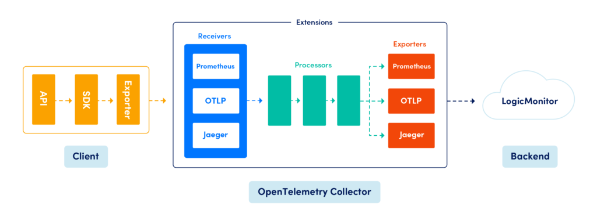

OpenTelemetry Collector¶
Collector makes your deployment much easier and faster to change your destination solution that will ingest your traces. It receives telemetry data, processes it, and then exports the data to tracing tools that can store it permanently. OTEL collectors can optionally be deployed between instrumented applications and the Telemetry backends as a Telemetry pipeline component. With an OTEL collector, Telemetry signals can be ingested in multiple formats, translated to OTEL native data format, and finally exported out to backend native formats.

So there are several ways to deploy a Collector. You can either deploy it as an Agent. Basically, the Collector is an instance running with your application on the same host so it could be in other technology in the same machine or it could be in a container world or you can also deploy it as a daemon set. Then you got the Gateway. You can have one or more Collectors that are running as a service. So one per cluster, per data center, per region.
Within the Collector, there are several components. We have the Receiver, that will get the data into the Collector. It could be either sent through push or pull. Then you have the Processor. So you have received some data and you can decide to transform it or do whatever you want with it. Once it has been processed, then we probably want to Export the data to several solutions.

Receiver, processor, and exporter, are defined through a Collector Pipeline. You can create a pipeline to process, transform and then send it over to an exporter. On top of a Collector, we have extensions. In terms of extensions for traces, there are the receiver and exporters that will be able to receive OpenTelemetry, Jaeger, and Zipkin. In the Processor, there are several ones, attributes, batch, queued retry, resource, sampling, span, etc.

For Metrics, you will have receivers for OpenTelemetry, in hosts, and Prometheus. The same thing for the Exporter, you can either send it to OpenTelemetry format or to Prometheus. Then you can have also a community-based component where you could basically build your own extensions that will enhance the collector pipeline.

OTel Collector Architecture¶

Installation¶
Linux¶
To install otelcol-contrib binary with the associated systemd service, run the following command replacing 0.58.0 with the desired version and amd64 with the desired architecture.
dev@dev:~$ wget https://github.com/open-telemetry/opentelemetry-collector-releases/releases/download/v0.58.0/otelcol-contrib_0.58.0_linux_amd64.deb
dev@dev:~$ sudo dpkg -i otelcol-contrib_0.58.0_linux_amd64.deb
You can check the status of the installed service with:
dev@dev:~$ sudo systemctl status otelcol-contrib
And check the logs with:
dev@dev:~$ sudo journalctl -u otelcol-contrib -f
Yu can edit the config at /etc/otel-contrib/config.yaml and restart OpenTelemetry Collector:
dev@dev:~$ sudo systemctl restart otelcol-contrib
Compiling resources¶
You can also compile OpenTelemetry Collector locally:
dev@dev:~$ git clone https://github.com/open-telemetry/opentelemetry-collector-contrib.git
dev@dev:~$ cd opentelemetry-collector-contrib
dev@dev:~opentelemetry-collector-contrib$ make install-tools
dev@dev:~opentelemetry-collector-contrib$ make otelcontribcol
dev@dev:~opentelemetry-collector-contrib$ ./bin/otelcontribcol_linux_amd64 --config ./examples/local/otel-config.yaml
Configuration¶
The Collector consists of three components that access telemetry data:
Receivers
Processors
Exporters
An example configuration would look like:
# receivers configure how data gets into the Collector.
receivers:
otlp:
protocols:
grpc:
http:
# processors specify what happens with the received data.
processors:
resourcedetection:
detectors: [system]
batch:
send_batch_size: 10000
timeout: 10s
# exporters configure how to send processed data to one or more backends.
exporters:
otlp:
endpoint: otlp.dev:4317
headers:
dev-dsn: 'https://<token>@dev.dev/<project_id>'
extensions:
# Health Check extension responds to health check requests
health_check:
# PProf extension allows fetching Collector's performance profile
pprof:
# zPages extension enables in-process diagnostics
zpages:
# Memory Ballast extension configures memory ballast for the process
memory_ballast:
size_mib: 512
# service pulls the configured receivers, processors, and exporters together into
# processing pipelines. Unused receivers/processors/exporters are ignored.
service:
pipelines:
traces:
receivers: [otlp]
processors: [batch]
exporters: [otlp]
Receivers¶
A receiver, which can be push or pull based, is how data gets into the Collector. Receivers may support one or more data sources. The receivers section is how receivers are configured. Many receivers come with default settings so simply specifying the name of the receiver is enough to configure it. Generally, a receiver accepts data in a specified format, translates it into the internal format, and passes it to processors and exporters defined in the applicable pipelines. The format of the traces and metrics supported is receiver-specific.
Processors¶
Processors are run on data between being received and being exported. The processors: section is how processors are configured. Processors may come with default settings, but many require configuration. Any configuration for a processor must be done in this section. Configuration parameters specified for which the processor provides a default configuration are overriden.
Processors can be used to transform the metrics or modify the name of the span. You can also do things like batching the data before sending it out, retrying in case the exporting fails, adding metadata, and tail-based sampling.
Exporters¶
An epxorter, which can be push or pull based, is how you send data to one or more backends/destinations. Exporters may support one or more data sources. The exporters: section is how exporters are configured. Exporters may come with default settings, but many require configuration to specify at least the destination and security settings.
Extensions¶
Extensions provide capabilities on top of the primary functionality of the collector. They do not require direct access to Telemetry data and are mostly used for managing and monitoring an OTEL collector. Extensions are optional.
The extensions: section is how extensions are configured. Many extensions come with default settings so simply specifying the name of the extension is enough to configure it (for example, health_check:). If configuration is required or a user wants to change the default configuration then such configuration must be defined in this section. Configuration parameters specified for which the extension provides a default configuration are overridden.
Service¶
The service section is used to enable the components which are configured within receivers, processors, exporters, and extensions sections. The service section consists of three sub-sections: extensions, pipelines, and telemetry.
The extensions consist of a list of all of the extensions to enable. Pipelines can be of traces, metrics, and logs type and consist of a set of receivers, processors, and exporters. Each receiver/processor/exporter must be defined in the configuration outside of the service section to be included in a pipeline. Telemetry is where the telemetry for the collector itself can be configured. It has two sub-sections: logs and metrics.